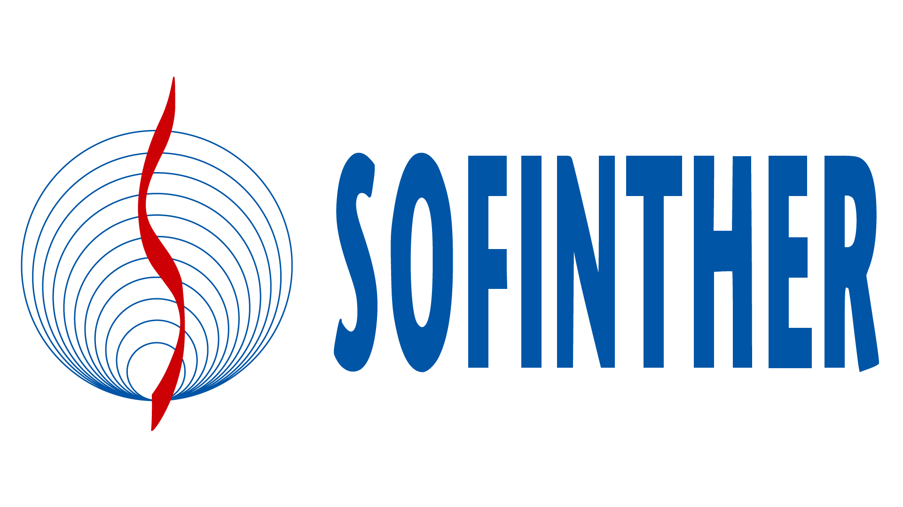

<div class="presentation-card-container">
    <div class="main-content">
        <div class="header">
            <div class="date">mars - août. 2021</div>
            <div class="description">
                <div class="title">
                    Stage assistant ingénieur
                </div>
                <div class="subtitle">
                    Mirgation d'une application Java vers Angular
                </div>

                <div class="technologies">
                    <div class="chips primary">
                        Angular 7
                    </div>
                </div>
            </div>

            

        </div>


        <div class="content">
            <div class="details">
                Stage en tant que développeur web au sein d'une équipe Agiles. Travail sur la migration d'une a Stage en tant que développeur web au sein d'une équipe Agiles. Travail sur la migration d'une application Java vers Angular. Création de composants, directives
                Angular pour réaliser l'interface et utilisation de la librairie RxJS.pplication Java vers Angular. Création de composants, directives Angular pour réaliser l'interface et utilisation de la librairie RxJS.
            </div>
        </div>

    </div>
</div>